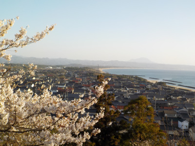
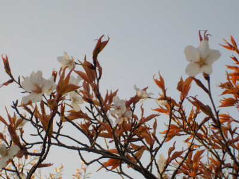
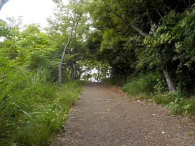
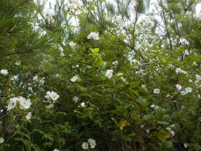
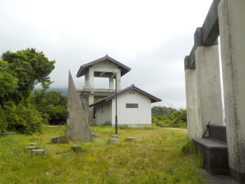
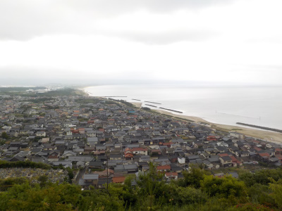
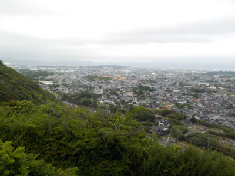

奉納山公園の桜がキレイでした。
2023/03/28

桜も綺麗でしたが、天気がよかったので三瓶山もよく見えました。（カメラでは薄くなっています。）

ソメイヨシノじゃない桜ではもう葉っぱが出ているものがありました。これはこれでとてもキレイでした。
島根県出雲市大社町杵築北2948
2023/03/28

桜も綺麗でしたが、天気がよかったので三瓶山もよく見えました。（カメラでは薄くなっています。）

ソメイヨシノじゃない桜ではもう葉っぱが出ているものがありました。これはこれでとてもキレイでした。
2022/06/12

出雲阿国塔から整備された道を登ります。
車でも登れるみたいですが、歩いて行きました。

途中に野バラが咲いていました。野バラって初めて見たかも。

公園には日時計や展望台、休憩所がありました。
晴れていないので日時計は見れませんでした。

展望台からの眺めです。晴れてたらいい景色なんでしょうね。
曇ってたのでほぼグレー状態でした。

左方向（東側）の眺めです。水平線左隅に出雲ドームが見えました。写真だと分かりにくいですね。
歩いて登ればいい運動になります。散歩にいい公園です。